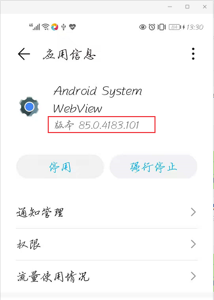
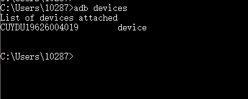
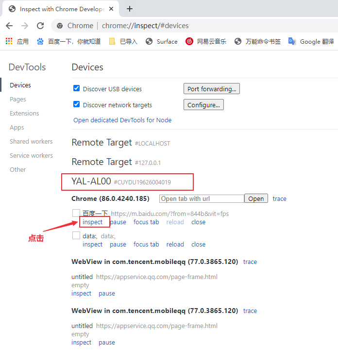
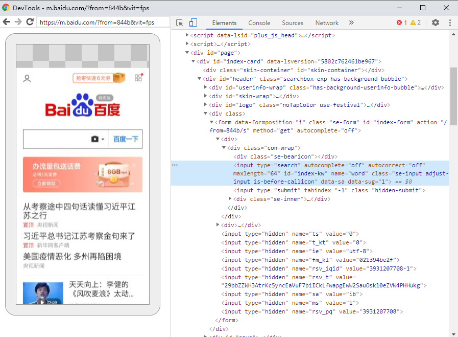
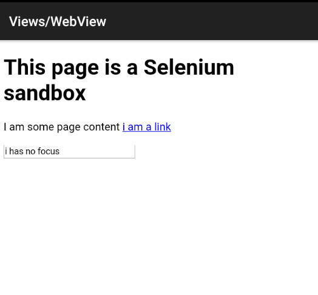

混合应用中包含 Web 视图的应用，在 App自动化测试 | Appinum 介绍及环境安装 中介绍了appium支持WebView测试，本文将分享Android 混合页面的测试方法。
WebView测试环境准备
手机端
被测浏览器：
iOS：Safari
Android：Chrome，Chromium，Browser (自带浏览器)
PC端
- 安装 Chrome浏览器(或chromium)，可以访问https://www.google.com
- 下载手机浏览器webview版本对应的 driver
- webview和driver版本对应关系：https://raw.githubusercontent.com/appium/appium-chromedriver/master/config/mapping.json
- driver下载：https://sites.google.com/a/chromium.org/chromedriver/downloads
- 国内镜像地址 : https://npm.taobao.org/mirrors/chromedriver/
- appium github: https://github.com/appium/appium/blob/master/docs/en/writing-running-appium/web/chromedriver.md
查看手机浏览器版本
1 | adb shell pm list package | grep webview |
查看手机browser和chrome版本
1 | C:\Users\10287>adb shell pm list packages|findstr browser |
查看手机webview版本
在手机上设置中查看 Android System WebView应用版本

客户端代码
desirecapability
- “chromedriverExecutable” = “指定driver地址”
- “browser” = “Browser” 或者“browser” = ”Chrome“
WebView元素定位
1、连接手机/模拟器

手机打开google浏览器，并进入百度网页：https://m.baidu.com
2、Chrome浏览器输入地址： chrome://inspect
可以看到电脑连接的设备名以及打开的手机浏览器

点击inspect

这样就可以定位到浏览器元素。
Android混合页面测试
文档：https://developers.google.com/web/tools/chrome-devtools/remote-debugging/webviews?hl=zh-cn
测试步骤：
- 打开ApiDemos
- 进入WebView页面
- 点击”i am a link”
- 退出应用

下载ApiDemos-debug.apk
1 | from appium import webdriver |
本文标题:App自动化测试 | Android WebView测试
文章作者:hiyo
文章链接:https://hiyongz.github.io/posts/appium-android-webview/
许可协议:本博客文章除特别声明外，均采用CC BY-NC-ND 4.0 许可协议。转载请保留原文链接及作者。